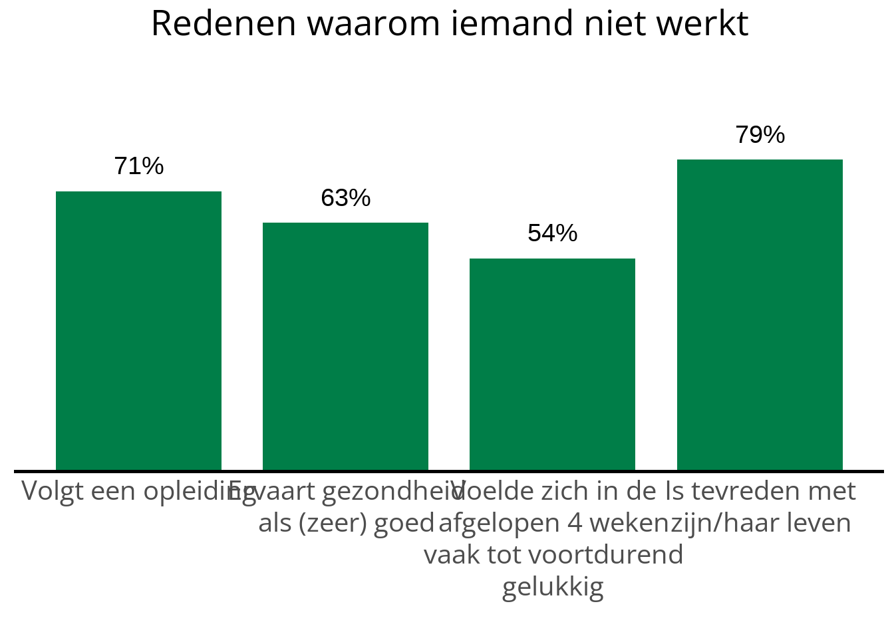
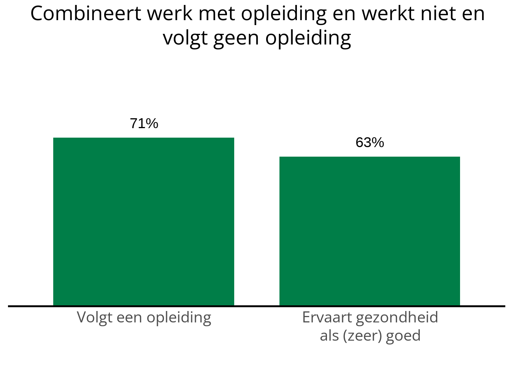

/*Lijntje dat tussen tekstblokken geplaatst kan worden*/
.tussenlijn {
border-bottom: 1px solid #86B443;
}4 Tekst, Code invoegen en layout aanpassen
De standaardrapportage GMJV is (net als dit boek) gemaakt met Quarto. Met Quarto kunnen opgemaakte tekst en afbeeldingen gecombineerd worden met code. In dit hoofdstuk worden de enkele technieken behandeld waarmee je een quarto document kan bewerken.
4.1 ‘Source’ en ‘Visual’ editor
Linksboven in een quarto document kan je kiezen tussen twee manieren van bewerken: Source en Visual. Als je niet zo thuis bent in programmeren of markdown zal je waarschijnlijk gebruik willen maken van de visual-editor. Dit lijkt het meest op andere tekstverwerkers. Desalnietttemin is het goed om bewust te zijn van beide mogelijkheden, al is het slechts om terug te wisselen wanneer je perongeluk op source hebt geklikt.
In de visual-editor worden opgemaakte tekst en afbeeldingen getoond. Ook krijg je bovenaan een werkbalk te zien zoals in Word & andere tekstverwerkers. Met deze werkbalk kan je o.a.
Tekst opmaken.
Een type Kop / Header selecteren.
Lijsten maken
Links, plaatjes , codeblokken of tabellen invoegen.
In de source-editor wordt de ‘markdown-syntax’ van je document weergeven. Dit is de onderliggende logica van je document. In de source-editor ontbreekt de werkbalk. Toch kan je alle dingen doen die ook in de visual editor kunnen. Hiervoor kan je gebruik maken van markdown-syntax. Bijvoorbeeld:
Een regel die met een hashtag begint wordt een kop. De hoeveelheid hashtags geeft het niveau van de kop aan. Dus: “# Kop 1” “## Kop 2” etc.
**woord** maakt ‘woord’ vetgedrukt, *woord* maakt ‘woord’ schuingedrukt.
4.2 Stijlelementen in tekst
In de tekst kunnen verschillende stijlelementen toegevoegd worden, zoals een tussenlijn, een blok met gele achtergrondkleur en een extra witregel.
4.2.1 Witregel toevoegen
Een witregel kan toegevoegd worden door <br> in de tekst toe te voegen.
4.2.2 Tussenlijn
In de standaard rapportage worden horizontale lijnen gebruikt om tussen verschillende secties. De opmaak van de tussenlijn wordt bepaald in het custom.css bestand. Daar staat de div .tussenlijn die aangeeft hoe deze lijn eruit ziet. Hier kan je dus ook de eigenschappen van de lijn veranderen, zoals kleur of dikte. De ‘div’ met de class ‘tussenlijn’ ziet er zo uit:
De tussenlijn zelf ziet er standaard zo uit:
Een tussenlijn kan toegevoegd worden in de rapportage door het volgende toe te voegen:
::: tussenlijn
:::
4.2.3 Achtergrondkleur
In de standaard rapportage worden tekstvakken soms voorzien van een achtergrondkleur. Ook de opmaak van dit blok wordt bepaald in het custom.css bestand. Daar staat de div .achtergrondkleur die aangeeft hoe deze lijn eruit ziet. Hier kan je dus ook de eigenschappen van de class veranderen. Het blok ziet er standaard zo uit:
/* achtergrond-kleur*/
.achtergrondkleur {
background-color: #F7F7DB;
color: #012C17;
padding: 20px;
}Dit ziet er zo uit:
Hier tekst die in het blok komt.
Een blok met achtergrondkleur kan je zelf op de volgende manier toevoegen:
::: achtergrondkleur
Hier tekst
:::
4.3 R code in code-blokken
Om te zorgen dat tabellen en grafieken met een dynamische inhoud in de rapportage geplaatst kunnen worden maken we gebruik van code-blokken met R code. Een code-blok kan je tijdens het bewerken van je rapport draaien door rechtsbovenin het code-blok op de groene pijl te klikken. De uitvoer van de code zal dan onder het blok verschijnen.
Een nieuw code-blok kan je als volgt aanmaken:
In de visual editor: Insert > Executable Cell > R
In de source editor: Zoals hieronder. Type drie backticks ‘```’ gevolgd door ‘{r}’ Sluit het blok af met drie backticks.
```{r naam-blokje, echo=FALSE}
#Hier R code
```Standaard worden codeblokjes ook in de rapportage getoond. Dat is meestal niet de bedoeling. Daarom is hierboven de chunk-option ‘echo=FALSE’ opgegeven. Optioneel kan je het code-blok een naam geven zoals naam-blokje hierboven. Een naam kan helpen met overzicht en het opsporen van fouten.
4.4 R code in lopende tekst
Het is ook mogelijk om R code in lopende tekst te plaatsen. Op de plek waar je de code aanroept toont de rapportage dan het resultaat van de code. Bijvoorbeeld een percentage, of een gemeentenaam. De syntax is als volgt:
` r #hier code `
Deze syntax kan je overal gebruiken in de lopende tekst bijvoorbeeld:
- Een Header 1 met een dynamische gemeentenaam:
# ` r params$gemeentenaam`
- Inline berekeningen:
Er waren ` r totaal_deelnemers ` deelnemers. Daarvan was ` r deelnemers_geslaagd / totaal_deelnemers * 100` % geslaagd.
4.5 Kolomlayout
Je kan onderdelen van je rapportage naast elkaar presenteren in Quarto. Hier wordt een van de manieren om dit te doen uitgelegd. Hierbij wordt steeds gebruik gemaakt van twee setjes van drie dubbele punten naast elkaar. Voor mensen die thuis zijn in html is het handig te weten dat dit de markdown syntax is voor een ‘div’.
Warning
Let op. Om deze werkwijze toe te passen het nodig om de editor op ‘Source’ in te stellen.
Zie ook het Quarto boek over Custom layouts
4.5.1 Syntax voor twee kolommen van gelijke grote:
::: {layout=“[50,50]”}
::: column
Dit is tekst in de linkerkolom
:::
Dit is tekst in de rechterkolom
::: column
:::
4.5.2 Het resultaat:
Dit is tekst in de linkerkolom
Dit is tekst in de rechterkolom
4.5.3 Toelichting
- Het buitenste setje van ‘:::’ bepaald de layout.
- Achter de eerste ‘:::’ komt ‘{layout=“[50,50]”}’ te staan
- Het maakt alleen uit hoe de getallen zich tot elkaar verhouden.
- [5,5] geeft hetzelfde resultaat als [50,50].
- [3,7] maakt twee kolommen waarvan de linker kolom 30% van de ruimte opneemt en de rechterkolom 70%.
- Het mogelijk meer dan twee kolommen te definieren.
- Tussen het buitenste setje ‘:::’ worden setjes geplaatst voor de alle kolommen.
- Achter de eerste ‘:::’ van de kolom komt het woordt ‘column’ te staan
- Tussen de eerte en laatste ‘:::’ van de kolom kan je ieder soort inhoud plaatsen. Een afbeelding, tekst of een code-blok waar een grafiek uitkomt.
4.5.4 X-assen uitlijnen bij verschillende lengte labels
Als je twee grafieken naast elkaar plaatst kan het zijn dat de x-assen niet op dezelfde hoogte staan. Dit heeft dan te maken met het aantal regels dat verschillende aslabels innemen. De x-as wordt omhoog geduwd door de aslabels. Als je de x-assen in dit geval gelijk wilt trekken kan dat met het argument x_as_regels_toevoegen.


In het bovenstaande voorbeeld heeft de linkergrafiek maximaal 4 regels in de aslabels, terwijl de rechtergrafiek er slechts 2 heeft. Dit kunnen we dus uitlijnen door twee lege regels toe te voegen aan de aslabels van de rechtergrafiek.


4.6 Tabel en Grafiek layout t.b.v digitoegankelijkheid
Standaard maken grafiekfuncties automatisch alt-text o.b.v. de data in de grafiek. Alt-text is één van de manieren om ervoor te zorgen dat de informatie die een grafiek overbrengt digitoegankelijk is. De automatisch gegenereerde alt-text is een opsomming van alle labels in de grafiek en de percentages die daarbij horen. Zo een opsomming kan (zeker bij grafieken met veel groepen en percentages) het nadeel hebben dat er overzicht verloren gaat.
Een alternatieve benadering is om de grafiek van een digitoegankelijke tabel met de equivalente informatie te voorzien. In alle grafiekfuncties kan dit met de parameter tabel_en_grafiek. Wanneer deze optie aantstaat worden er op de plaats van de grafiek twee tabbladen gemaakt: “Tabel en Grafiek”. Hiervoor moeten kleine aanpassingen aan aanroep van codeblokjes gedaan worden.
- get_alt_text() is niet meer nodig
- gebruik results = ‘asis’
- geen ‘plot = monitor_df’ maar direct aanroepen (resulteert anders in ongewenste ‘NULL’ onder plot).
#|echo: fenced
monitor_df %>%
maak_staafdiagram_dubbele_uitsplitsing(
var_inhoud = "LVEES404",
var_crossing_groep = "AGGSA402",
var_crossing_kleur = "AGLFA401",
tabel_en_grafiek = TRUE #tabel_en grafiek staat aan
)
| Is sterk eenzaam | ||
| Vrouw | Man | |
|---|---|---|
| 16-17 jaar | 25% | * |
| 18-20 jaar | 30% | 28% |
| 21-25 jaar | 25% | 33% |
Tabset panel in Quarto
Als tabel_en_grafiek = TRUE, wordt er aan de achterkant markdown syntax gegenereerd om de layout met tabbladen te maken.
Dit kan je ook zelf handmatig doen: Quarto Tabset-Panels